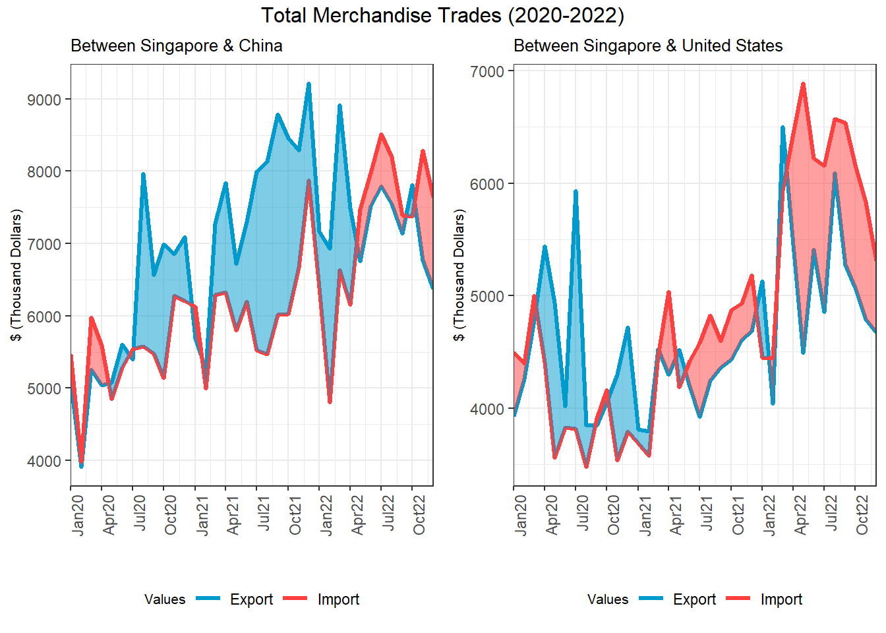

pacman::p_load(readxl, scales, viridis, lubridate, gridExtra, knitr, data.table, ggthemes, CGPfunctions, ggHoriPlot, gapminder, gganimate, ggbraid, tidyverse)Take-home Exercise 4
Putting Visual Analytics into Practical Use
1. Overview
For this exercise, I will be using various time-series data analytical visualization methods to explore the effects of COVID-19, as well as the global economic and political environment in 2022, on Singapore’s bilateral trade, including import, export, and trade balance.
The Merchandise Trade data is in .xlxs format and retrieved from the Department of Statistics, Singapore (DOS) website, under the sub-section of Merchandise Trade by Region/Market. The study period is between January 2020 to December 2022.
2. Loading R Packages
Since ggbraid has been removed from the CRAN repository, a manual method is used to install the development version of ggbraid from GitHub.
The code chunk below check, install and launch these R packages: readxl, scales, viridis, lubridate, gridExtra, knitr, data.table, ggthemes, CGPfunctions, ggHoriPlot, gganimate, ggbraid, tidyverse.
3. Data Preparation
3.1 Data Import
The function read_excel is used to read the downloaded .xlsx file. The arguments included are path to the excel file, col_types = NULL to guess the data type for the column and range to define the rows and columns where data is extracted. By selecting specific rows and columns, we can reduce some data processing steps compared to importing all rows and columns.
# Read the Excel file and select the relevant columns and rows
imports <- read_excel("data/outputFile.xlsx", col_types = NULL, range = "T1!A10:AL129")
exports <- read_excel("data/outputFile.xlsx", col_types = NULL, range = "T2!A10:AL101")3.2 Data Preparation
3.2.1 Check for missing values
Next, the tables are being checked for missing values using a combination of functions any and is.na. If the result is FALSE, it means that there is no missing values.
# Check for missing values
any(is.na(imports))[1] FALSEany(is.na(exports))[1] FALSE3.2.2 Remove 2023 Jan column
Since there study period covers from January 2020 to December 2022, the 2023 Jan column is removed from both imports and exports tables using indexing with a negative sign as shown below. The method below uses indexing to remove columns by specifying the names or positions of the columns to be removed. The “-” sign before the column names indicates that these columns should be removed.
# Remove 2023 Jan column from imports and exports
imports <- imports[, -c(2)]
exports <- exports[, -c(2)]3.2.3 Reducing number of columns
pivot_longer is a function in the tidyr package in R that is used to reshape data to long format. It allows conversion of multiple columns into a single column, while simultaneously creating a new column to indicate the original variable associated with the values. Indexing is also used in this case to select multiple columns. names function is used to give the columns the correct naming.
# Rotating the tables to consolidate the months in a column
imports_long <- imports %>%
pivot_longer(cols = c(2:37),
values_to = "imports")
exports_long <- exports %>%
pivot_longer(cols = c(2:37),
values_to = "exports")
# Correcting the column titles
names(imports_long)[names(imports_long) == "Data Series"] <- "location"
names(imports_long)[names(imports_long) == "name"] <- "monthyear"
names(exports_long)[names(exports_long) == "Data Series"] <- "location"
names(exports_long)[names(exports_long) == "name"] <- "monthyear"3.2.4 Combining exports and imports into a single table
The merge function is used to join the two tables based on the common “monthyear” and “location” columns. The by argument specifies the name of the common column to join on, and the all argument specifies the type of join to perform. A full join (i.e., return all rows from both tables, filling in missing values with NA) by setting all to TRUE. Full join is used to capture trades from countries with either imports or exports only.
# Creating a combined table
trades <- merge(imports_long, exports_long, by=c("location","monthyear"), all = TRUE)3.2.5 Converting monthyear into date objects
The mutate() function to modify “monthyear” column in the dataframe. We use paste0() to append “-01” to the “monthyear” column to create a full date string with a day component. parse_date_time() converts the character strings in the column to date objects with the “ymd” format. Finally, format() function to format the date objects in the “mmm yyyy” format using the %b %Y format code.
# Append day component and change monthyear into date objects
trades <- trades %>%
mutate(monthyear = parse_date_time(paste0(monthyear, "-01"), "ymd")) %>%
arrange(`location`, `monthyear`)
# check the class of the new column
class(trades$monthyear)[1] "POSIXct" "POSIXt" 3.3 Data Wrangling
3.3.1 Categorize merchandise trade data into Total, Regional and Country level
Since the data in “trades” are already arranged in ascending order by location and monthyear, it enables us to create a new table for total merchandise trade by assigning the “imports” and “exports” from “Total Merchandise Imports” and “Total Merchandise Exports” directly instead of using merge function.
# Total merchandise trade
total <- data.frame(
location = "Total Merchandise",
unit = "(Thousand Dollars)",
monthyear = trades[trades$location == "Total Merchandise Imports (Thousand Dollars)", "monthyear"],
imports = trades[trades$location == "Total Merchandise Imports (Thousand Dollars)", "imports"],
exports = trades[trades$location == "Total Merchandise Exports (Thousand Dollars)", "exports"]
)For merchandise trades at regional level, we will filter rows with the substring using grepl() function with the pattern “Million Dollars”. This returns a logical vector which is used to subset the original table to keep only the rows that contain the substring “Million Dollars”.
# Regional merchandise trade
regional <- trades[grepl("Million Dollars",trades$location),]For merchandise trades at country level, we will filter out locations in the “total” and “regional” tables. We will also replace the ‘NA’ values with 0 by using is.na() function to create a logical vector and assign the value 0 based on this logical vector.
# Country merchandise trade
country <- trades[!grepl("Million Dollars|Total Merchandise", trades$location),]
# Replace NA values with zeros in imports and exports columns
country[,c("imports","exports")] <- replace(country[, c("imports","exports")], is.na(country[, c("imports","exports")]), 0)3.3.2 Creating new columns for location specifics, units, year, month and tradebalance
For location specifics and units, we identify the required information from “location” column using regular expression concept. To retrieve the nation name, str_replace_all function is used to replace the units (e.g. Million Dollars) with whitespace which is later removed using str_trim function.
# New column for location specifics
regional <- regional %>%
mutate(region = str_trim(str_replace_all(regional$location, "\\(Million Dollars\\)","")))
country <- country %>%
mutate(nation = str_trim(str_replace_all(country$location, "\\(Thousand Dollars\\)","")))To retrieve the units, we can leverage on str_trim function to extract the expression within the brackets.
# New column for units
regional <- regional %>%
mutate(unit = str_extract(regional$location, "\\([A-Za-z\\s]+\\)"))
country <- country %>%
mutate(unit = str_extract(country$location, "\\([A-Za-z\\s]+\\)"))To obtain the year and month from “monthyear” column, we can apply year and month functions from lubridate library as the column is already in POSIXct format.
# New columns for year and month
total <- total %>%
mutate(year = year(total$monthyear)) %>%
mutate(month = month(total$monthyear)) %>%
mutate(year = factor(year),
month = factor(month, levels = 1:12))
regional <- regional %>%
mutate(year = year(regional$monthyear)) %>%
mutate(month = month(regional$monthyear)) %>%
mutate(year = factor(year),
month = factor(month, levels = 1:12))
country <- country %>%
mutate(year = year(country$monthyear)) %>%
mutate(month = month(country$monthyear)) %>%
mutate(year = factor(year))
# Did not change month in country table into factor for other usesTo find out the trade balance, we can perform a simple math subtraction of imports minus exports. If the net trade balance is negative, this means that there is a net export for the reference time period. If net trade balance is positive, there would be more imports than exports for the reference time period.
#New column for tradebalance
total <- total %>%
mutate(tradebalance = imports - exports)
regional <- regional %>%
mutate(tradebalance = imports - exports)
country <- country %>%
mutate(tradebalance = imports - exports)4. Data Visualization
4.1 Data Exploration
4.1.1 Trends in overall merchandise trades
In this section, we will discover patterns in overall merchandise trades using heatmaps followed by cycleplots.
Heatmaps
Code Chunk to Plot Heatmaps
#Converting to non-scientific number format
options(scipen = 999)
# Creating the heatmap for Total imports
p_heatmap1 <-
ggplot(total,
aes(month,year, fill = imports)) +
geom_tile(color = "white", size =0.5) +
theme_tufte() +
coord_equal() +
scale_fill_gradient(name = "Thousand Dollars",
low = "lightblue",
high = "darkblue") +
labs(x = NULL, y = NULL,
title = "Imports by Year and Month") +
theme(axis.ticks = element_blank(),
plot.title = element_text(hjust = 0.5),
legend.title = element_text(size = 8),
legend.text = element_text(size = 6))
#Creating the heatmap for Total Exports
p_heatmap2 <-
ggplot(total,
aes(month,year, fill = exports)) +
geom_tile(color = "white", size =0.5) +
theme_tufte() +
coord_equal() +
scale_fill_gradient(name = "Thousand Dollars",
low = "pink",
high = "darkred") +
labs(x = NULL, y = NULL,
title = "Exports by Year and Month") +
theme(axis.ticks = element_blank(),
plot.title = element_text(hjust = 0.5),
legend.title = element_text(size = 8),
legend.text = element_text(size = 6))
#Creating the heatmap for Total Trade Balance
p_heatmap3 <-
ggplot(total,
aes(month,year, fill = tradebalance)) +
geom_tile(color = "white", size =0.5) +
theme_tufte() +
coord_equal() +
scale_fill_gradient(name = "Thousand Dollars",
low = "black",
high = "lightgrey") +
labs(x = NULL, y = NULL,
title = "Trade balance by Year and Month") +
theme(axis.ticks = element_blank(),
plot.title = element_text(hjust = 0.5),
legend.title = element_text(size = 8),
legend.text = element_text(size = 6))
# Customize the ggplots using gridExtra
grid.arrange(p_heatmap1, p_heatmap2, p_heatmap3, ncol = 1)Insights
From the heatmaps, we can observe that:
Total imports and exports in Singapore had been increasing from 2020 to 2022. This could be due to recovery of trade activities with border opening after relaxation of Covid-19 restrictions.
In general, imports and exports shows similar trends across the three years. However, the month-on-month changes of exports and imports are actually not consistent which causes the heatmap for the trade balance to have different colour gradient pattern compared to imports/exports.
Based on the legend, magnitude of exports is larger than magnitude of imports. This is consistent with the trade balance heat map which shows that trade balance is generally negative.
Cycleplots
Code Chunk to Plot Cycleplot
#Converting to non-scientific number format
options(scipen = 999)
#Computing year average by months
hline.data <- total %>%
group_by(month) %>%
summarise(avg_export = mean(exports),
avg_import = mean(imports),
avg_balance = mean(tradebalance))
#Plotting cycle plot for imports
p_cycleplot1 <-
ggplot() +
geom_line(data = total,
aes(x=year,y=imports, group=month), colour = "black") +
geom_hline(data = hline.data,
aes(yintercept=avg_import),
linetype=6,
colour="red",
size=0.5) +
facet_grid(~month) +
theme(axis.text.x = element_text(angle=90, vjust=1, hjust=1)) +
labs(title = "Total Imports, Jan 2020-Dec 2022") +
xlab("") +
ylab("$")
#Plotting cycle plot for exports
p_cycleplot2 <-
ggplot() +
geom_line(data = total,
aes(x=year,y=exports, group=month), colour = "black") +
geom_hline(data = hline.data,
aes(yintercept=avg_export),
linetype=6,
colour="red",
size=0.5) +
facet_grid(~month) +
theme(axis.text.x = element_text(angle=90, vjust=1, hjust=1)) +
labs(title = "Total Exports, Jan 2020-Dec 2022") +
xlab("") +
ylab("$")
#Plotting cycle plot for trade balance
p_cycleplot3 <-
ggplot() +
geom_line(data = total,
aes(x=year,y=tradebalance, group=month), colour = "black") +
geom_hline(data = hline.data,
aes(yintercept=avg_balance),
linetype=6,
colour="red",
size=0.5) +
facet_grid(~month) +
theme(axis.text.x = element_text(angle=90, vjust=1, hjust=1)) +
labs(title = "Total Trade Balance, Jan 2020-Dec 2022") +
xlab("") +
ylab("$")
# Customize the ggplots using gridExtra
grid.arrange(p_cycleplot1, p_cycleplot2, p_cycleplot3, ncol = 1, heights = c(5,5,5))Insights
From the cycleplot, we can observe that:
- For January to September, the increase in imports and exports from 2021 to 2022 is larger than the increase in imports and exports from 2020 to 2021.
- However, there is a trend reversal for both imports and exports for October to December from 2021 to 2022 compared to from 2020 to 2021.
- The average trade balance is highest during April to July compared to the other months.
4.1.2 Trends in merchandise trades of regions
In this section, we will discover patterns in regional merchandise trades using horizon plot and slopegraph.
Horizon Plot
Code Chunk to Plot Horizon Plot
#Converting to non-scientific number format
options(scipen = 999)
#Correcting date format
regional <- regional %>%
mutate(date = ymd(`monthyear`))
#Plotting Horizon Plot for Imports
p_horizon1 <-
regional %>%
ggplot() +
geom_horizon(aes(x = date, y=imports),
origin = "midpoint",
horizonscale = 6)+
facet_grid(`region`~.) +
theme_few() +
scale_fill_hcl(palette = 'RdBu') +
theme(panel.spacing.y=unit(0, "lines"), strip.text.y = element_text(
size = 5, angle = 0, hjust = 0),
legend.position = 'none',
axis.text.y = element_blank(),
axis.text.x = element_text(size=7),
axis.title.y = element_blank(),
axis.title.x = element_blank(),
axis.ticks.y = element_blank(),
panel.border = element_blank()
) +
scale_x_date(expand=c(0,0), date_breaks = "3 month", date_labels = "%b%y") +
ggtitle('Imports from Each Region (Jan 2020 to Dec 2022)')
#Plotting Horizon Plot for Exports
p_horizon2 <-
regional %>%
ggplot() +
geom_horizon(aes(x = date, y=exports),
origin = "midpoint",
horizonscale = 6)+
facet_grid(`region`~.) +
theme_few() +
scale_fill_hcl(palette = 'RdBu') +
theme(panel.spacing.y=unit(0, "lines"), strip.text.y = element_text(
size = 5, angle = 0, hjust = 0),
legend.position = 'none',
axis.text.y = element_blank(),
axis.text.x = element_text(size=7),
axis.title.y = element_blank(),
axis.title.x = element_blank(),
axis.ticks.y = element_blank(),
panel.border = element_blank()
) +
scale_x_date(expand=c(0,0), date_breaks = "3 month", date_labels = "%b%y") +
ggtitle('Exports to Each Region (Jan 2020 to Dec 2022)')
#Plotting Horizon Plot for Trade Balances
p_horizon3 <-
regional %>%
ggplot() +
geom_horizon(aes(x = date, y=tradebalance),
origin = "midpoint",
horizonscale = 6)+
facet_grid(`region`~.) +
theme_few() +
scale_fill_hcl(palette = 'RdBu') +
theme(panel.spacing.y=unit(0, "lines"), strip.text.y = element_text(
size = 5, angle = 0, hjust = 0),
legend.position = 'none',
axis.text.y = element_blank(),
axis.text.x = element_text(size=7),
axis.title.y = element_blank(),
axis.title.x = element_blank(),
axis.ticks.y = element_blank(),
panel.border = element_blank()
) +
scale_x_date(expand=c(0,0), date_breaks = "3 month", date_labels = "%b%y") +
ggtitle('Tradebalances for Each Region (Jan 2020 to Dec 2022)')
# Customize the ggplots using gridExtra
grid.arrange(p_horizon1, p_horizon2, p_horizon3, ncol = 1, heights = c(3,3,3))Insights
From the horizon plots, we can observe that:
- For imports and exports, European Union and Europe were the first two regions to become consistently above average on around Feb 21. This is consistent with the timing where Europe is the first regions that relax cross-border restrictions.
Slopegraph
Code Chunk to Plot Slopegraph
#Converting to non-scientific number format
options(scipen = 999)
#Grouping regionals by year and region
regional_grp <- regional %>%
group_by(`year`,`region`) %>%
summarise(sum_imports = log10(sum(imports)),
sum_exports = log10(sum(exports)),
sum_balance = (sum(tradebalance)))
#Plotting the slopegraph for imports
regional_grp %>%
filter(year %in% c(2020, 2022)) %>%
newggslopegraph(year, sum_imports, region,
Title = "Imports ($) from each Region, 2020-2022",
SubTitle = "Logarithic y-scale",
Caption = "Source: DoS")Code Chunk to Plot Slopegraph
#Plotting the slopegraph for exports
regional_grp %>%
filter(year %in% c(2020, 2022)) %>%
newggslopegraph(year, sum_exports, region,
Title = "Exports ($) to each Region, 2020-2022",
SubTitle = "Logarithic y-scale",
Caption = "Source: DoS")Code Chunk to Plot Slopegraph
#Plotting the slopegraph for trade balances
regional_grp %>%
filter(year %in% c(2020, 2022)) %>%
newggslopegraph(year, sum_balance, region,
Title = "Trade Balance ($) for each Region, 2020-2022",
SubTitle = "Normal y-scale",
Caption = "Source: DoS")Insights
From the slopegraph, we can observe that:
- The trade balance for America has changed from net export (negative value) in 2020 to net import (positive value) in 2022.
- Net imports (positive) from Europe had the largest increase from 2020 to 2022 compared to the other regions.
- Net exports to Oceania (negative) is the largest increase from 2020 to 2022 compared to the other regions.
4.1.3 Trends in merchandise trades of countries
In this section, we will use the animated bubble chart to explore how the imports had changed against their exports for each country.
Animated bubble chart
Code Chunk to Plot Animated Bubble Chart
#Correcting date format
country <- country %>%
mutate(date = ymd(`monthyear`))
#Plotting animated bubble chart
ggplot(country, aes(x = imports/1000, y = exports/1000,
colour = nation,
label = nation)) +
geom_point(alpha = 1.5,
show.legend = FALSE) +
geom_text(check_overlap = TRUE) +
scale_colour_manual(values = country_colors, guide = "none") +
scale_size(range = c(2, 12)) +
labs(title = "Date: {format(frame_time, '%b%y')}",
x = 'Imports ($k)',
y = 'Exports ($k)') +
transition_time(date) + #<<
ease_aes('linear') #<<Insights
From the animated bubbled chart, we observed that:
- Across 2020 to 2022, imports to Hong Kong and Indonesia remained relatively constant while the exports had increased over that period.
- During mid 2022, it can be observed exports and imports with United States, Malaysia and China had larger fluctuations in different direction.
4.2 Impact of Global Events
In this section, we will investigate the impact of COVID-19 as well as the global economic and political dynamic in 2022 on Singapore bi-lateral trades. Three main events are highlighted and examined for the purpose of this study.
4.2.1 Regional Comprehensive Economic Partnership (RCEP) trade agreement
In 2022, RCEP came into effect in Jan for ten original parties: Australia, Brunei, Cambodia, China, Japan, Laos, New Zealand, Singapore, Thailand and Vietnam. RCEP then entered into force for the Republic of Korea on Feb and for Malaysia on Mar.
The RCEP potentially boost Singapore’s trade by creating a more integrated and seamless market among its trading partners. Singapore is one of the countries expected to benefit the most from the agreement due to its strategic location and well-developed infrastructure.
We will use boxplot to illustrate these significant movements in exports or/and imports for Malaysia, Japan, Korea, China and Australia (as observed in Section 4.1.3). From the boxplots, we can observe that trades activities had picked up with these countries compared to the 2020 and 2021.
Code Chunk to Create a boxplot
# Creating quarter column
country$quarter = ifelse(country$month < 4,
"Q1", ifelse(country$month > 3 & country$month < 7,
"Q2", ifelse(country$month > 6 & country$month < 10,
"Q3", "Q4")))
q_order <- c("Q1 2020", "Q2 2020", "Q3 2020", "Q4 2020",
"Q1 2021", "Q2 2021", "Q3 2021", "Q4 2021",
"Q1 2022", "Q2 2022", "Q3 2022", "Q4 2022")
country <- country %>%
mutate(quarter = paste(country$quarter, country$year)) %>%
mutate(quarter = factor(quarter, level =q_order))
country_rcep <- country %>%
filter(nation %in% c("Malaysia", "Japan", "Republic Of Korea", "Mainland China", "Australia"))
#Plotting the boxplot for imports
p_boxplot1 <-
ggplot(data = country_rcep,
aes(x = quarter, y = imports/1000)) +
geom_boxplot(aes(fill = nation)) +
labs(title = "Imports of Selected Countries, 2020-2022",
x = "", y = "$ (Thousand Dollars)", color = "Values") +
theme(title = element_text(size = 8), axis.title = element_text(size = 8),
axis.text.x = element_text(angle=90, vjust=1, hjust=1))
#Plotting the boxplot for exports
p_boxplot2 <-
ggplot(data = country_rcep,
aes(x = quarter, y = exports/1000)) +
geom_boxplot(aes(fill = nation)) +
labs(title = "Exports of Selected Countries, 2020-2022",
x = "", y = "$ (Thousand Dollars)", color = "Values") +
theme(title = element_text(size = 8), axis.title = element_text(size = 8),
axis.text.x = element_text(angle=90, vjust=1, hjust=1))
# Customize the ggplots using gridExtra
grid.arrange(p_boxplot1, p_boxplot2, ncol = 1, heights = c(25,25))
4.2.2 Escalation of tension between China and US
In 2022, the tensions between China and US had escalated which resulted in increased tariffs and trade restrictions, especially in the last quarter.
As a small, open economy heavily reliant on international trade, Singapore becomes vulnerable to global trade tensions. We can observed from the The ongoing trade conflict between the US and China resulted in negative spillover effects on Singapore’s trade, particularly for China. From the plots below, we can observed that there is a reduce in demand for Singapore’s exports to China.
Code Chunk to Plot Braided Ribbon Chart
# Pivot longer for the second time to group import and export into one column
country_br <- country %>%
pivot_longer(cols = c(3:4),
values_to = "amount",
names_to = "type")
#Plotting the braid ribbons chart for China
p_braid1 <-
ggplot() +
geom_line(data = country_br |> filter(nation == "Mainland China"),
aes(x = date, y = (amount/1000), group = type, color = type),
linewidth = 1.2) +
geom_braid(data = country |> filter(nation == "Mainland China"),
aes(x = date, ymin = (imports/1000), ymax = (exports/1000),
fill = imports/1000 > exports/1000), alpha = 0.5) +
scale_color_manual(values = c("deepskyblue3", "brown1"), labels = c("Export", "Import")) +
scale_fill_manual(values = c("deepskyblue3", "brown1"), guide = "none") +
labs(title = "Between Singapore & China",
x = "", y = "$ (Thousand Dollars)", color = "Values") +
theme(title = element_text(size = 8), axis.title = element_text(size = 8),
axis.text.x = element_text(angle=90, vjust=1, hjust=1),
legend.title=element_text(size=8),
legend.position ="bottom") +
scale_x_date(expand=c(0,0), date_breaks = "3 month", date_labels = "%b%y")
#Plotting the braid ribbons chart for USA
p_braid2 <-
ggplot() +
geom_line(data = country_br |> filter(nation == "United States"),
aes(x = date, y = (amount/1000), group = type, color = type),
linewidth = 1.2) +
geom_braid(data = country |> filter(nation == "United States"),
aes(x = date, ymin = (imports/1000), ymax = (exports/1000),
fill = imports/1000 > exports/1000), alpha = 0.5) +
scale_color_manual(values = c("deepskyblue3", "brown1"), labels = c("Export", "Import")) +
scale_fill_manual(values = c("deepskyblue3", "brown1"), guide = "none") +
labs(title = "Between Singapore & United States",
x = "", y = "$ (Thousand Dollars)", color = "Values") +
theme(title = element_text(size = 8), axis.title = element_text(size = 8),
axis.text.x = element_text(angle=90, vjust=1, hjust=1),
legend.position ="bottom")+
scale_x_date(expand=c(0,0), date_breaks = "3 month", date_labels = "%b%y")
# Customize the ggplots using gridExtra
grid.arrange(p_braid1, p_braid2, ncol = 2,
top = "Total Merchandise Trades (2020-2022)")
4.2.3 Russia-Ukraine war and second wave of Covid-19 infections
The Russia-Ukraine war had potentially caused an impact to the global trade in goods and services as the energy priced almost doubled and rapid inflation of non-energy prices were also observed.
In addition, the pandemic continues to pose challenges for Singapore’s trade as it disrupts global supply chains and reduces demand for Singapore’s exports. The resurgence of COVID-19 cases in the Southeast Asia region could further hamper trade by disrupting cross-border travel and limiting the availability of critical goods and services.
From the visualization, we can observed the net export decreases in 2022 while imports from Europe remains fairly consistent. It implies that the closer proximity of the events had a greater influence on Singapore’s bilateral trades.
Code Chunk to Plot Braided Ribbon Chart
# Pivot longer for the second time to group import and export into one column
regional_br <- regional %>%
pivot_longer(cols = c(3:4),
values_to = "amount",
names_to = "type")
#Plotting the braid ribbons chart for Asia
p_braid3 <-
ggplot() +
geom_line(data = regional_br |> filter(region == "Asia"),
aes(x = date, y = (amount/1000), group = type, color = type),
linewidth = 1.2) +
geom_braid(data = regional |> filter(region == "Asia"),
aes(x = date, ymin = (imports/1000), ymax = (exports/1000),
fill = imports/1000 > exports/1000), alpha = 0.5) +
scale_color_manual(values = c("deepskyblue3", "brown1"), labels = c("Export", "Import")) +
scale_fill_manual(values = c("deepskyblue3", "brown1"), guide = "none") +
labs(title = "Between Singapore & Asia",
x = "", y = "$ (Thousand Dollars)", color = "Values") +
theme(title = element_text(size = 8), axis.title = element_text(size = 8),
axis.text.x = element_text(angle=90, vjust=1, hjust=1),
legend.position = "bottom") +
scale_x_date(expand=c(0,0), date_breaks = "3 month", date_labels = "%b%y")
#Plotting the braid ribbons chart for Europe
p_braid4 <-
ggplot() +
geom_line(data = regional_br |> filter(region == "Europe"),
aes(x = date, y = (amount/1000), group = type, color = type),
linewidth = 1.2) +
geom_braid(data = regional |> filter(region == "Europe"),
aes(x = date, ymin = (exports/1000), ymax = (imports/1000),
fill = imports/1000 < exports/1000), alpha = 0.5) +
scale_color_manual(values = c("deepskyblue3", "brown1"), labels = c("Export", "Import")) +
scale_fill_manual(values = c("brown1", "deepskyblue3"), guide = "none") +
labs(title = "Between Singapore & Europe",
x = "", y = "$ (Thousand Dollars)", color = "Values") +
theme(title = element_text(size = 8), axis.title = element_text(size = 8),
axis.text.x = element_text(angle=90, vjust=1, hjust=1),
legend.position = "bottom") +
scale_x_date(expand=c(0,0), date_breaks = "3 month", date_labels = "%b%y")
# Customize the ggplots using gridExtra
grid.arrange(p_braid3, p_braid4, ncol = 2,
top = "Total Merchandise Trades (2020-2022)")5. Conclusion
The ongoing COVID-19 pandemic in 2022 has continued to impactSingapore’s bilateral trade. The outbreak of new waves of infections in Southeast Asia, has led to renewed travel restrictions and supply chain disruptions, posing challenges for Singapore’s trading activities. There are also other global events such as implementation of the Regional Comprehensive Economic Partnership (RCEP) trade agreement, the escalation of tensions between the US and China which also influenced Singapore’s trade relationships and economic growth. From the visualization we can observe that some events may pose challenges for Singapore’s trade, others present opportunities for the country to improve trade.